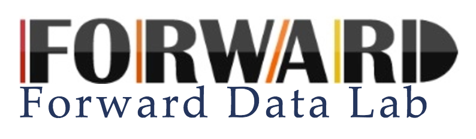

About
I am a Masters Student at University of Illinois, Urbana-Champaign. My major is Computer Science, and my current interests lie in data analytics. My vision is to bring about social good by acting upon information carved from data. Currently, I am focusing on interactive visual data exploration systems. A fun fact about me is that I am a third culture kid.
Education

Master of Science in Computer Science University of Illinois at Urbana-Champaign
Bachelor of Science in Computer Science University of Illinois at Urbana-Champaign
Research Labs

The Zenvisage Team develops data visualization software. In addition to frontend & backend support, I work among graduate students and professors for academic research. This project is led by Prof. Aditya Parameswaran. As an example of my work, please take a look at my undergraduate thesis or the Zenvisage website.

The Entity Search Team was a team of undergrads led by Prof. Kevin C.C. Chang. We developed information retrieval software related to Named Entity Recognition and Web Search.
Military Service
I served 2 years in the army as a KATUSA for the ROK-US alliance. I was dispatched to the Public Relations Office of United States Forces Korea to bridge gaps between the US and ROK army. I take pride in my commitment to strengthen the alliance.